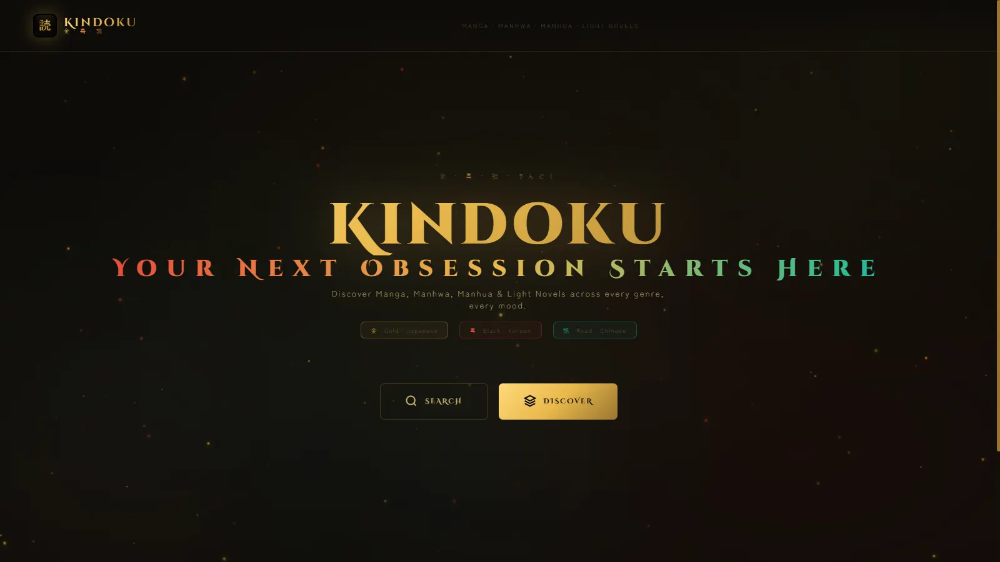
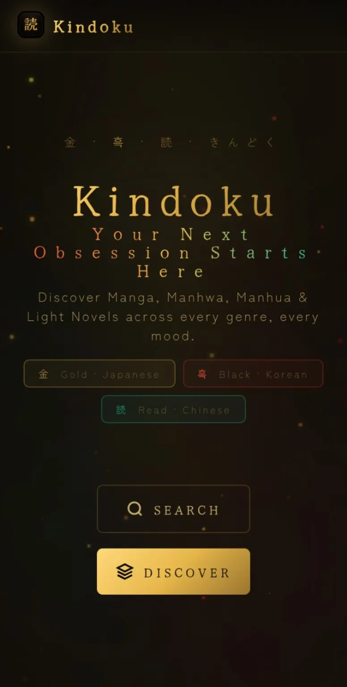

The Challenge & Context
Readers hunting for manga, manhwa, manhua, or light novels face two constant frustrations: generic recommendations that don't match what they actually like, and read links that lead to dead pages or sketchy, ad-riddled sites.
Case study

Readers hunting for manga, manhwa, manhua, or light novels face two constant frustrations: generic recommendations that don't match what they actually like, and read links that lead to dead pages or sketchy, ad-riddled sites.
Kindoku pairs an AI recommendation engine (Groq, with a fallback chain so results stay reliable even when a model call fails) with real metadata and cover art pulled live from AniList's GraphQL API. For read links, several sites were tested directly instead of trusting the first result. MangaBuddy for manga and FreeWebNovel for light novels proved most consistently reliable. The whole platform is installable as a PWA, so it behaves like a native app on mobile and desktop.
